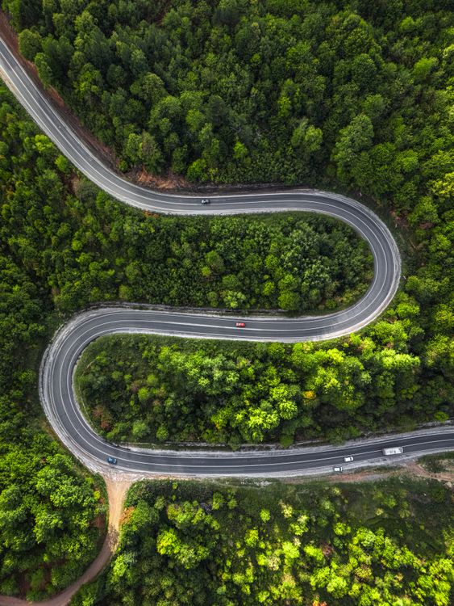

Image se map generator
Iska use social Media tagging ke kaam aata hai jab kisi ko tag karte
hai.Jab ham img par click karenge to yek pop aa jayega aur alert dikhega
ga jo bhi alert me likhege hoge.Aur cursor ka shape bhi change ho jayega.